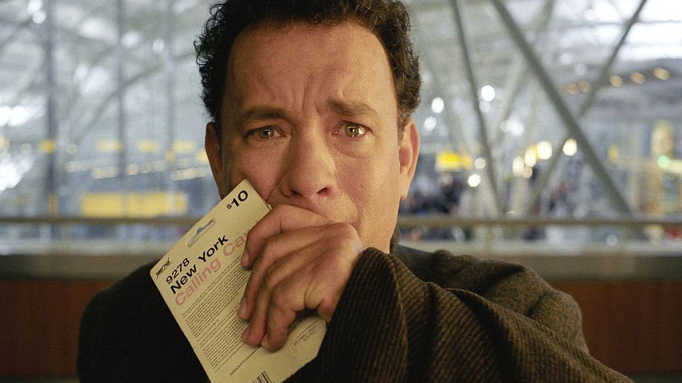
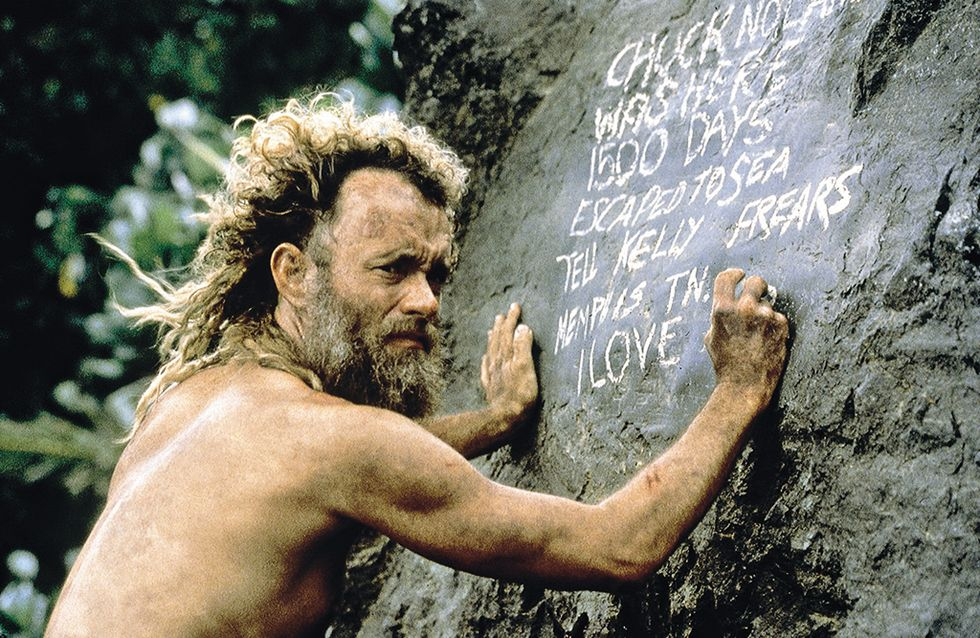
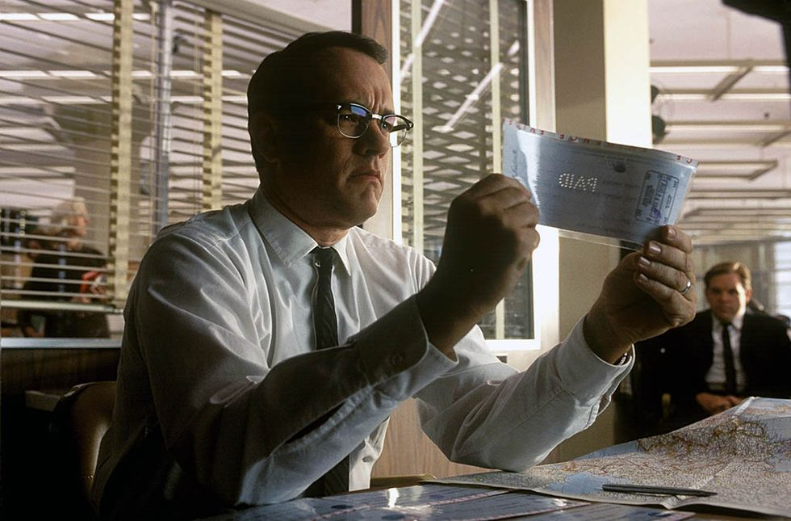
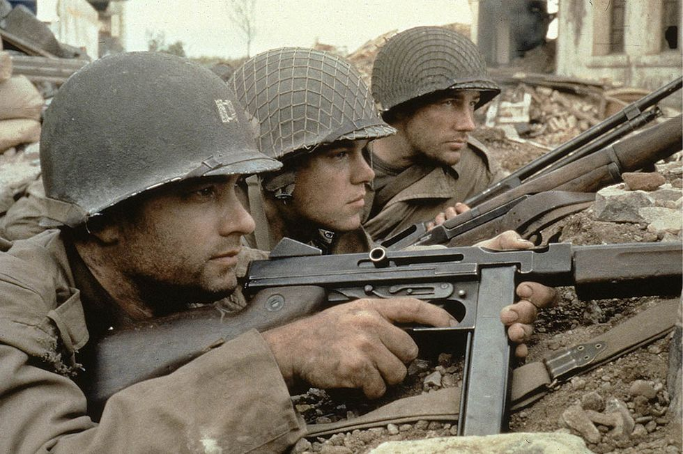
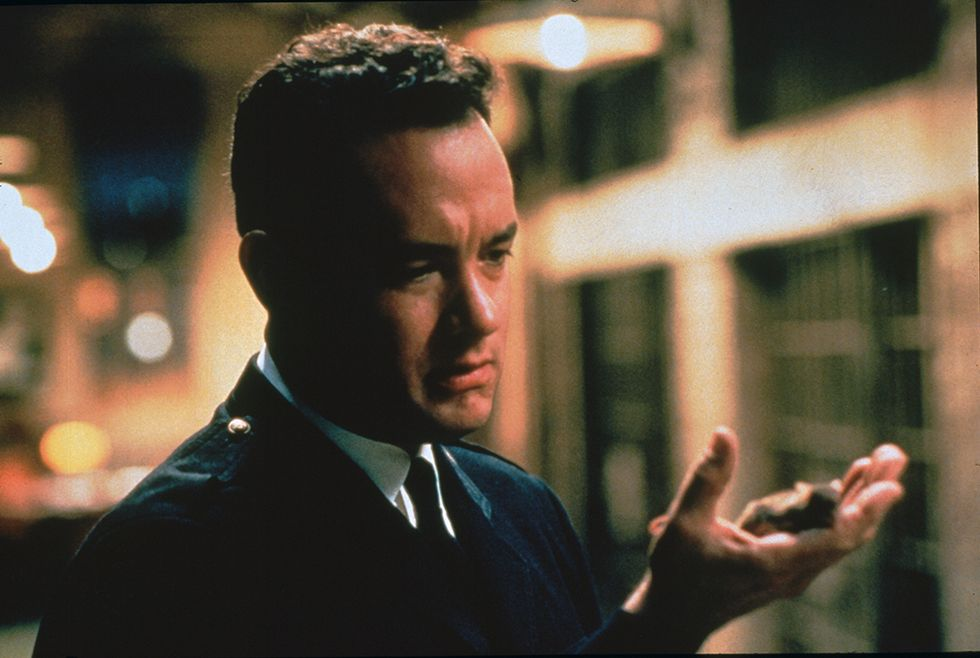
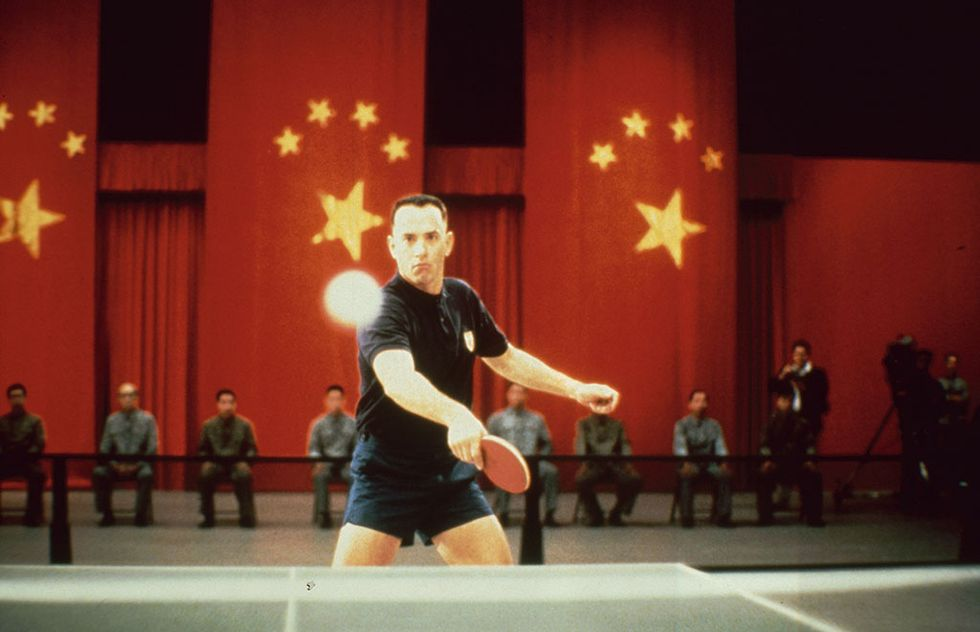
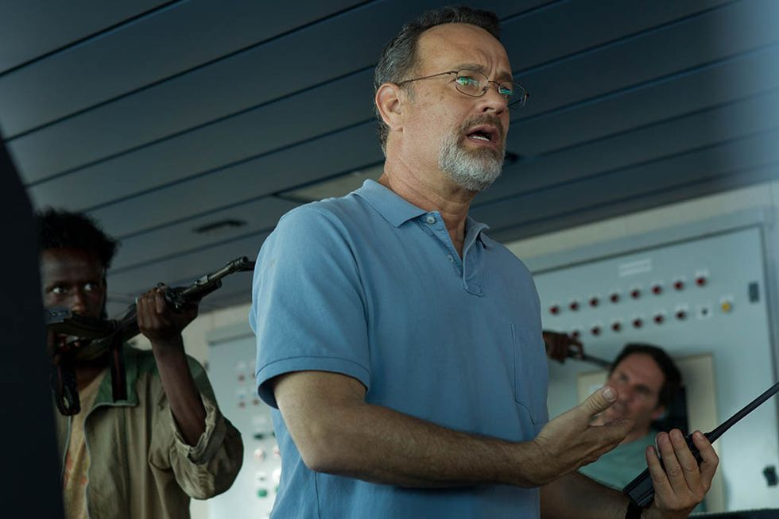
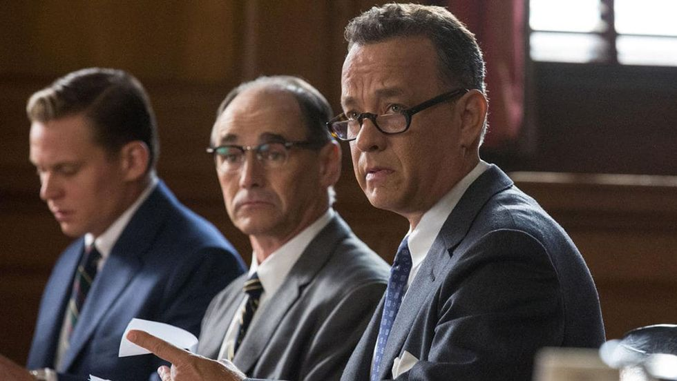

Actor

Tom Hanks
Acerca de Tom Hanks
Thomas Jeffrey Hanks es un actor y director de cine estadounidense.Es uno de los intérpretes más reconocidos de Hollywood, y muchas de sus películas, ya sean dramas o comedias, han recibido reconocimiento internacional. Wikipedia Nacimiento: 9 de julio de 1956 (edad 66 años), Concord, California, Estados Unidos Hijos: Colin Hanks, Chet Hanks, Elizabeth Ann Hanks, Truman Theodore Hanks
Biografía
Tom Hanks, de nombre real Thomas J. Hanks, se crió en el seno de una familia reestructurada. En su adolescencia descubre el teatro y empieza a darse cuenta de que ha encontrado su vocación. En 1978, Tom Hanks termina sus estudios y se muda a Nueva York para convertirse en actor. Debuta en el cine con ‘Sabe que estas sola’ (1980). En 1993 recibe su primer Oscar al Mejor Actor, por su interpretación de un homosexual con SIDA en ‘Philadelphia’. Y recibe su segunda estatuilla, un año después, por su trabajo en ‘Forrest Gump’.
Vida Personal
- Matrimonio e Hijos
- Salud
- Ciudadania Griega
Se casó por primera vez con Samantha Lewes en 1978 y fueron padres de dos hijos: el también actor Colin Hanks (1977) y Elisabeth Ann (1982). La pareja se divorció en 1985. Ella falleció de cáncer en 2002. En 1988, se casó con la actriz y productora Rita Wilson, con quien tiene dos hijos, Chester Marlon (1991) y Truman Theodore (1996)
El actor ha confirmado que padece diabetes tipo 2. Tenía niveles altos de glucosa desde los 36 años. El 11 de marzo de 2020, Hanks publicó en su cuenta oficial de Instagram que tanto él como su esposa Rita Wilson, dieron positivo en los análisis del virus originado en China a finales de 2019, Coronavirus (COVID-19), mientras estaban de viaje en Australia.
En julio de 2020, el gobierno griego le otorgó a Hanks y a su esposa, Rita Wilson, la nacionalidad de este país, que según la legislación griega, se puede conceder a aquellos que "han prestado servicios excepcionales al país o cuya nacionalización sirve de interés público". En enero de ese mismo año, el matrimonio Hanks y sus hijos habían sido nombrados ya "ciudadanos honorarios" como agradecimiento a su labor en la captación de fondos para las víctimas del devastador incendio forestal de las cercanías de Atenas en el verano de 2018.
Top 10 de sus mejores peliculas
- Apolo 13 (1995) 
- Naúfrago (2000) 
- Atrapame si puedes (2002) 
- Rescatando al Soldado Ryan (1998) 
- La milla Verde (1999) 
- Forrest Gump (1994) 
- La Terminal (2004)
- Capitán Phillips (2013) 
- Camino a la perdición (2002)
- El puente de los espias (2015) 